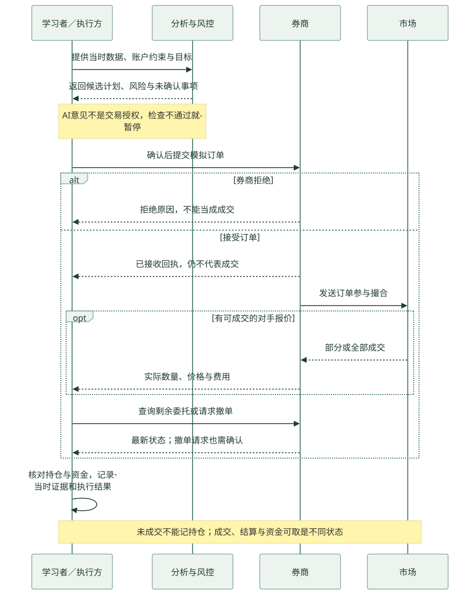

给初学者的四张图
先知道自己在哪一步，再学细节。
不要把四张图当成四门新课程。它们只是同一条学习主线的四个角度：先决定学习顺序，再分清对象关系，再检查是否应该停下，最后看订单消息怎样返回。
建议阅读顺序
先判断，再决定数量，最后才谈下单。
第一次看不用记住每个专业词。每张图只回答一个问题，并给你一个可以马上练习的小任务。
- 路线图我现在应该先学什么？
- 关系图账户、证据、计划和订单分别是什么？
- 决策图什么情况必须暂停或拒绝？
- 时序图提交后怎样确认有没有真正成交？
01 / 先看这张
学习路线：我现在该先解决什么问题？
从资金和账户开始，经过证据、判断、风险和计划，最后才模拟执行。期权是选修，不是买股票前必须经过的步骤。

看懂的标准
你应该能说出自己当前卡在哪一步，而不是只记住箭头。读完后先完成资金承受能力题；如果还说不清“最多能承受多少”，不要急着往后跳。
02 / 把对象分开
关系图：账户、证据、计划、订单不是一回事
把对象分开，才能知道缺的是信息、判断、权限还是成交回报。箭头表示影响或记录关系，不表示结果一定成功。

看懂的标准
判断是“我为什么想做”；订单是“我提出了什么请求”；成交是“实际上完成了多少”。账户变化还要等成交和结算规则分别确认，三者不能互相替代。
03 / 学会停下来
决策流程：什么时候必须拒绝或回到前一步？
看好只是起点，不是提交许可。任何一项必要条件缺失，都应该暂停、补齐或放弃；AI一致赞同也不能跳过检查。

看懂的标准
你应该能指出至少一个“拒绝理由”，并知道补齐后要从哪一步重新检查。报价变了、数据过期、风险超限或权限不足，都不是靠一句“模型看好”解决的。
04 / 最后再看
下单时序：提交后怎样确认有没有成交？
从上往下看时间，横着看消息发给谁。箭头是请求或回应；“已接收”“已送市场”“已成交”“已结算”是不同状态。

看懂的标准
没有成交回报，就不能把它记成“买到了”。市价单也不保证立刻成交；限价单可能只成交一部分。请求撤单后仍需核对最终状态，成交、结算和资金可取也不是同一时刻。